2017 – 2025
Carbon 3D Modular PC Chassis
A parametric PC chassis system of carbon fiber tubes and clamp-on 3D-printed modules. It began as an AMD-sponsored build featured on AMD's social channels and has produced five generations of builds, including a commission.
- Autodesk Inventor
- Parametric design
- Carbon fiber
- FDM
- Custom water cooling
- Sponsored & commissioned builds
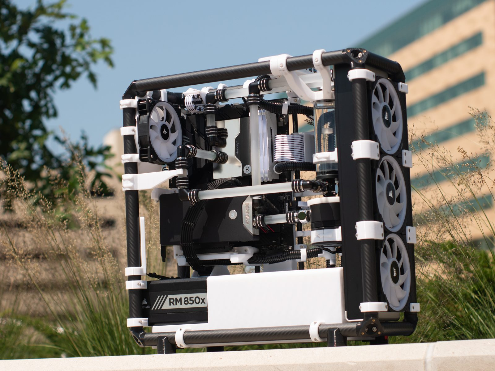
The project began when someone on AMD's marketing team saw my earlier Project Clearwater build and offered to send parts in exchange for marketing photos. AMD featured the result on its Instagram and Twitter, and PC showcase accounts reposted the builds to large audiences: @extremepc (3,400+ likes, 2019), @gamingpcrigs (2019), and @hardware.hobbies and @swifty.setups (2020). It has since grown into a chassis system: the same parametric Inventor model has produced a series of builds, each refining the last. Every photo here is mine.
I designed the first version after a house fire in my junior year of high school, and have put roughly 500 hours of CAD into the system since.
Design rules from the start:
- Fully parametric. Dimensions are driven by Excel spreadsheets inside Autodesk Inventor, so the frame resizes around different hardware.
- Buildable with basic hand tools. Carbon fiber tubes are cut to length, and printed joints and modules clamp onto them.
- Modular. Every component (motherboard tray, GPU mount, radiators, reservoir, PSU compartment, I/O) is its own clamp-on module.


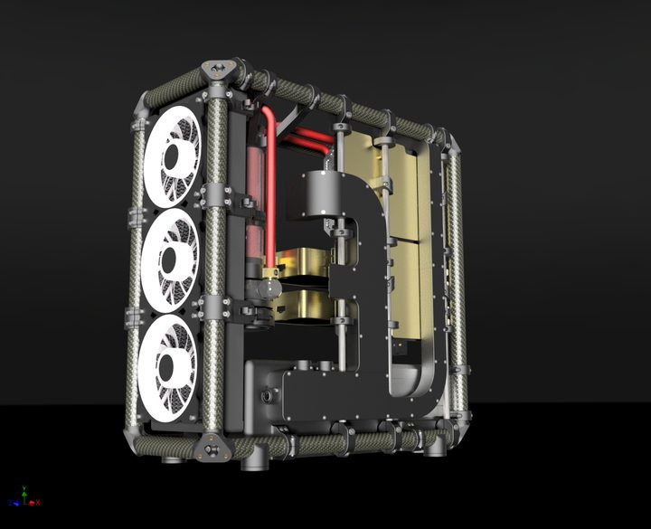

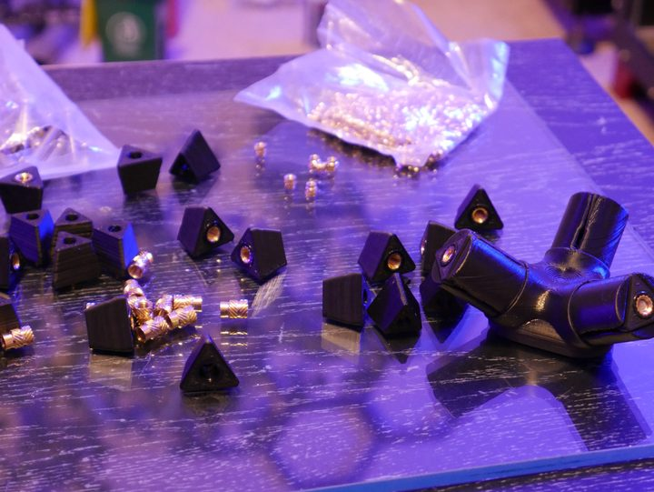
Community response
I documented the build on Reddit, where the series has drawn well over 20,000 upvotes across r/3Dprinting, r/functionalprint, r/pcmasterrace and r/Amd. The top post reached 3,693 upvotes at 98%. Every thread filled up with requests for files, kits and commissions.
"Most engineers at my company couldn't make a build like this, myself included." (r/functionalprint)
"That's one of the cleanest printed pc cases I've seen!" (r/3Dprinting)
| Post | Subreddit | Upvotes |
|---|---|---|
| Printed chassis, commissioned build (2023) | r/3Dprinting | 3,693 |
| Same build (2023) | r/functionalprint | 2,316 |
| Three-way expanding tube corner joint (2022) | r/functionalprint | 1,843 |
| Cable-duct network (2022) | r/functionalprint | 1,584 |
| First build: Ryzen 7 2700X + Vega 64, full hardline (2019) | r/Amd | 1,464 |
Construction notes: shell parts are CF-PETG with 5 mm walls, a chassis uses about 250 screws, and the materials come to about $150 per chassis before labor. When commenters raised grounding of the motherboard on carbon tubes, I checked it with a meter.
First build (2018–2019)
The first prototype took about 80 hours of design. Early versions used large printed compartments and acrylic panels. I settled on a prism of carbon tubes as the frame, with modules clamped on, a custom water-cooling loop and an expanding three-way coupler.

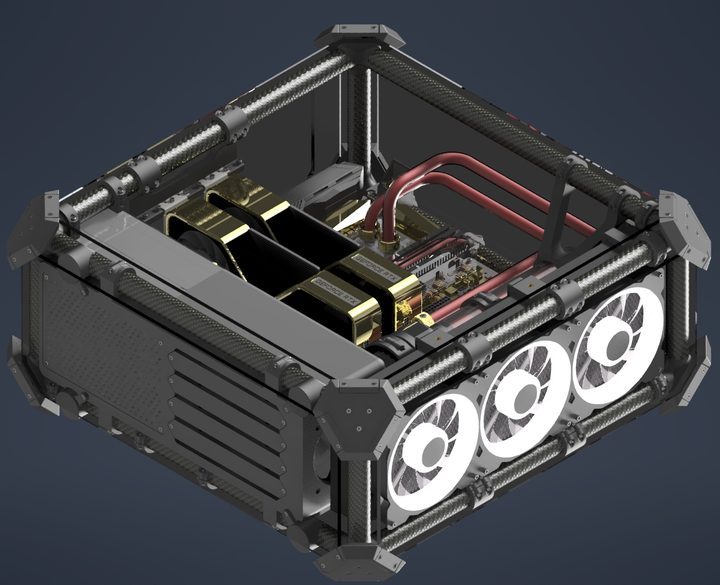

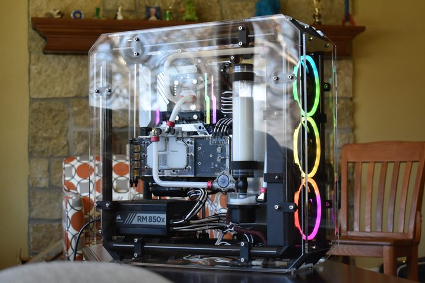

Black generation (2020–2023)
Rebuilt in black with a motherboard duct "spine", a bottom compartment for PSU wiring and drives, and a printed cable-duct network that routes power and data where it's needed. I also made a kit of parts that snaps over split-loom covering for clean cable runs.


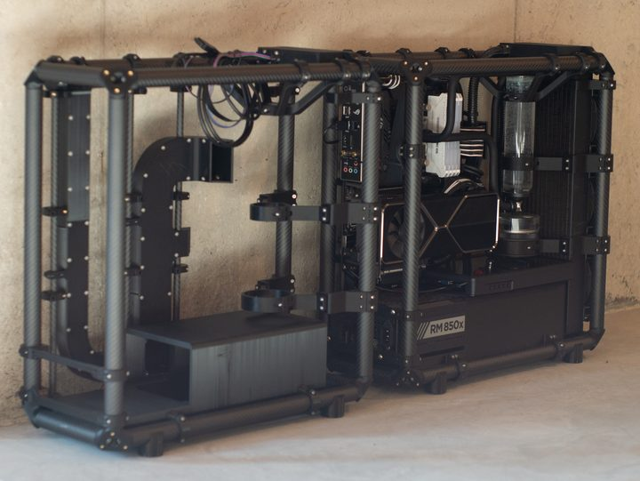

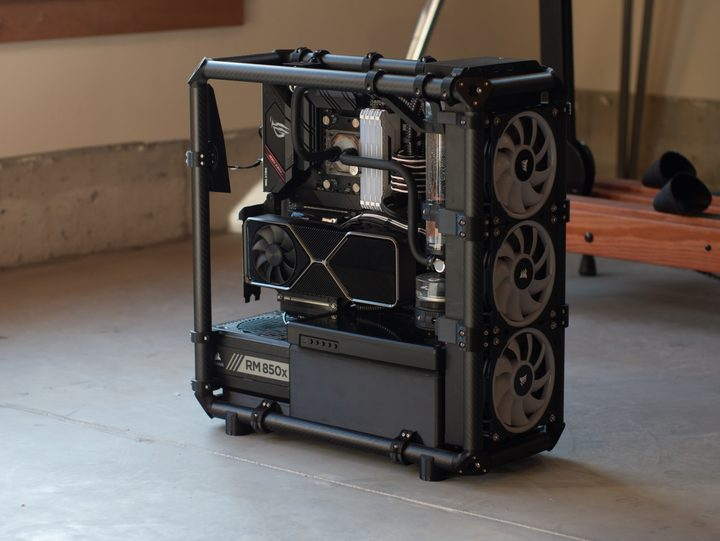

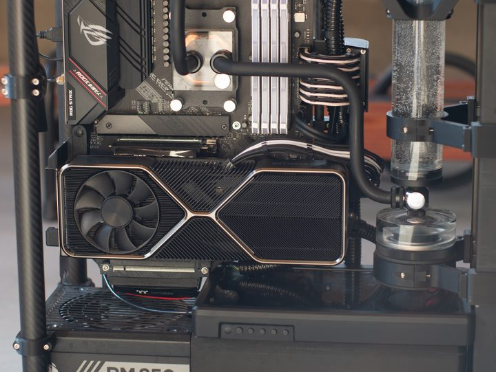

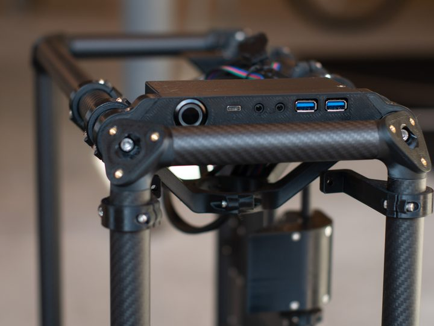
Commissioned build (2023)
A friend commissioned an AIO-cooled build on the chassis (Ryzen 7 5800X3D, RTX 4070 Ti) with white fans and a tempered-glass option. It's the most-upvoted post of the series.


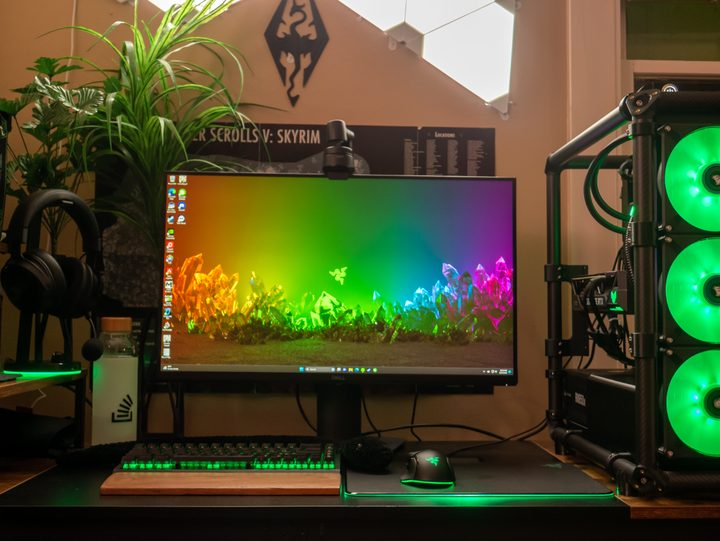


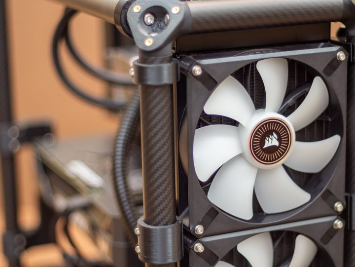
My current build: black and white, with enclosure (2024–2025)
The latest generation has a two-tone printed kit, a full custom loop and a much cleaner part count. People kept saying they'd avoid an open case because of dust, so this one adds an optional enclosure: rounded printed edge frames that attach to the tubes with magnets and hold tempered-glass side panels and a wave-pattern front panel. It runs a Ryzen 7 5800X3D and an RTX 3080 Ti.

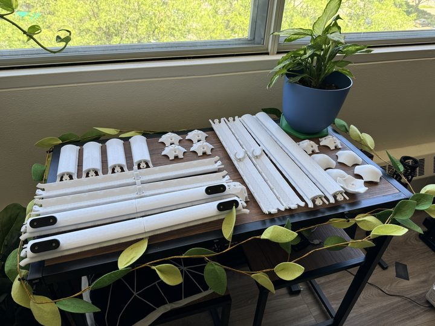

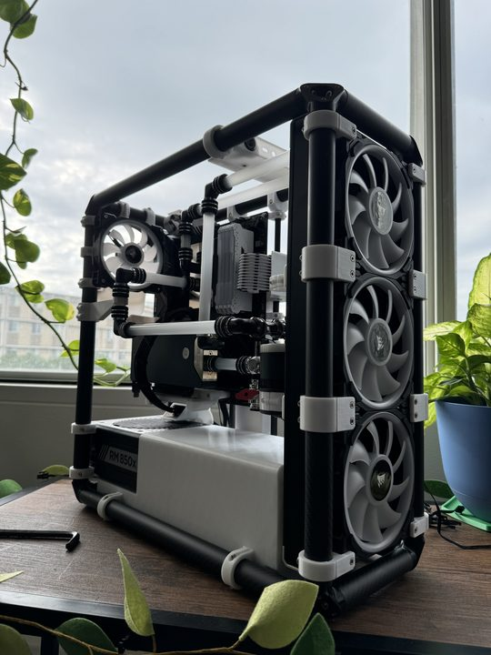

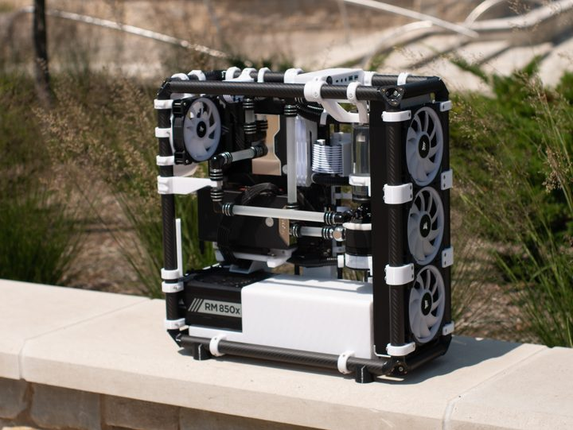

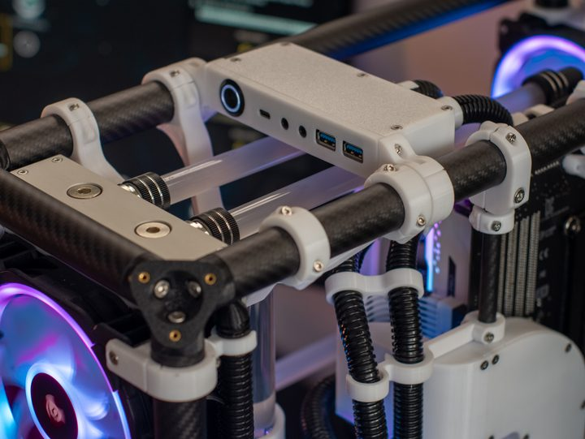

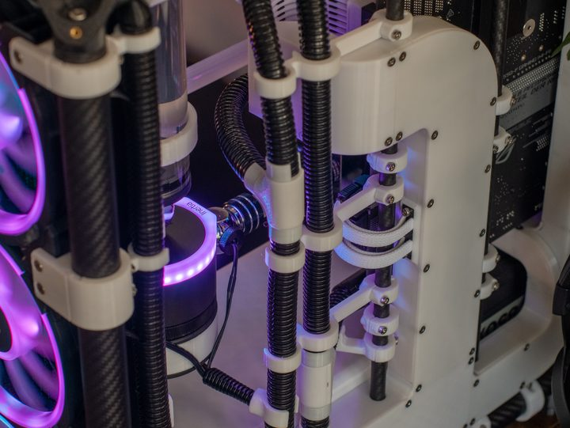


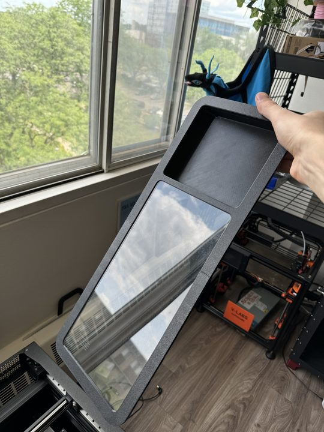

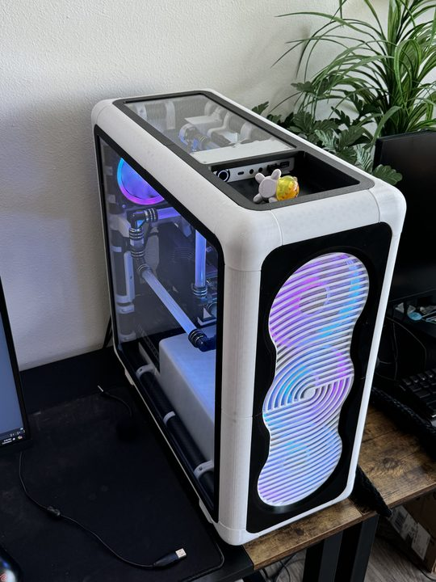

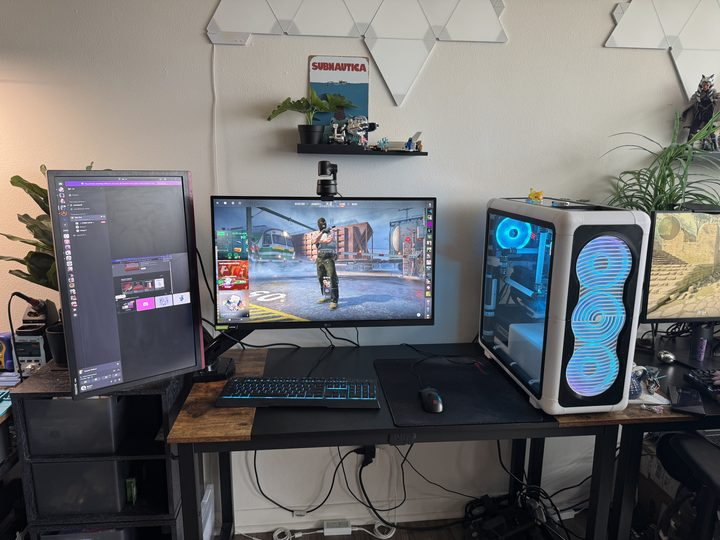